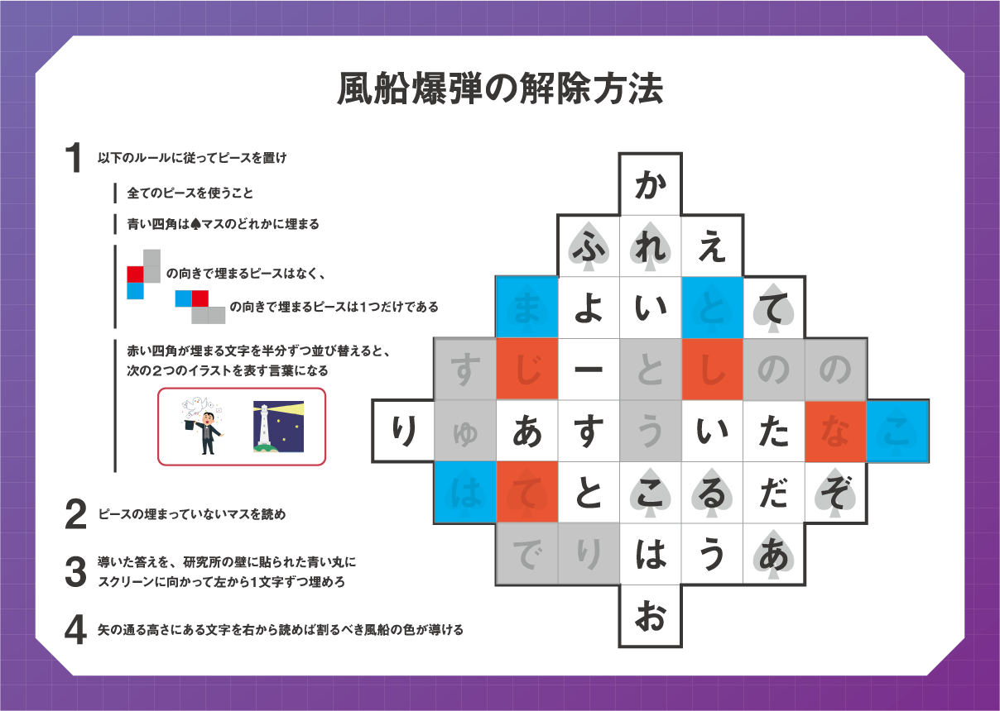
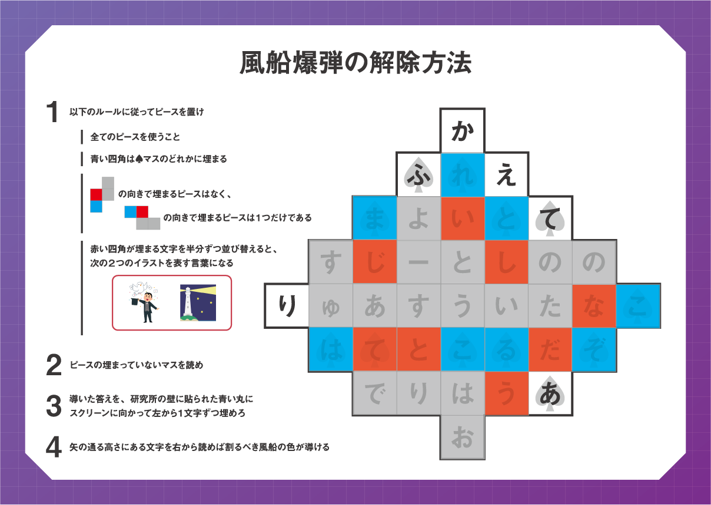

UNSEEN
チームメンバー全員の合意を得てから読み進めましょう。
UNSEEN ヒント
ヒント使用時間目安
ゲーム開始から10分経過：1つめの「みる」に挑戦中の場合ヒントを見る
ゲーム開始から20分経過：2つめの「みる」に挑戦中の場合ヒントを見る
ゲーム開始から30分経過：3つめの「みる」に挑戦中の場合ヒントを見る
ゲーム開始から40分経過：記憶復元盤が完成していない場合ヒントを見る
ゲーム開始から50分経過：STEP 観測を達成していない場合ヒントを見る
ぬぬぬ
まずはSTEPシートの「やるべきこと」に従い、9枚の謎を解き進めましょう。
謎が一部しか見えていない状態になっています。
1/10、2/10、3/10と書かれたものはそのまま解くのは難しいため、まずはそれ以外の謎に取り組みましょう。
頭に共通する文字を1つ加えて単語を完成させる謎です。
「いとう」と「せっと」の頭に共通してつく1文字を考えましょう。
頭に「か」をつけると、「かいとう」と「かせっと」という単語になります。答えは「か」です。
イラストの名称を使って上の文章を変化させる謎です。
下のイラストはそれぞれ「ピストル」「ナイフ」「カンガルー」です。
上の文章から”ぴす”をとり、”ふ”をなくし、”かん”を”るー”に変化させても答えは3文字になりません。
見切れている右側にもう一つイラストが隠れていると推測してみましょう。
”た”が多く含まれており、”た”を抜けば3文字が残ることから、隠れているイラストは”たぬき”であると推測できます。
答えは「るーと」です。
イラストとその右の"SUMM②…"、"W③NT…"から上が夏、下が冬を表していると考えられます。
①がどこにあるか推測できないでしょうか。
上はSUMMERで下はWINTERであり、そのうち頭から5文字は見えていることから、①が書かれている箇所は1か所に限られます。
"SUMMER"と"WINTER"に登場し、まだ使用していない文字から①は、Rだと考えられます。
答えは「れい（REI）」です。
左、真ん中、右の列はそれぞれ違った法則に従って並んでいます。
それぞれの列の法則を考え、赤い線上の四角に入る言葉を繋げて読みましょう。
左は太陽系惑星の並びで水→金→・・・、真ん中は対義語となる言葉、右は五十音のア段の並びでア→カ→サ→・・・を考えるとよさそうです。
左から”チ”、”ジョウ”、”ハ”と入るため、答えは「ちじょうは（地上波）」です。
まずはそれぞれのイラストの名称を特定し、イラストをつなげる順番を考えましょう。
左からそれぞれ”たまご”、”かに”、”いちょう”、”くれよん”です。それぞれの単語に数字が含まれています。"さん"にあたるイラストはどこにあるのでしょうか？
右端の黒い点に"さん"が含まれるイラストがあると仮定することで言葉を導くことができます。答えは「あいすぶれいく」です。
ゴールを表す”G”の表記はありますがスタートを表す”S”がありません。ゴールの”つくえ”からさかのぼってスタート地点を特定しましょう。
りす→すねーく→くつ→つくえと結べそうですが、答えが「くへんか」となってしまうため、”りす”がスタートではないようです。
別のスタート地点を探しましょう。
”くすり”からスタートすることで答えを導くことができます。答えは「かがくへんか」です。
まずはグループ①②がそれぞれどのような共通点を持つ集まりかを、イラストの名称や上の単語を参考に推測しましょう。
グループ①はドー”ナツ”、”はる”まき、”アキ”レスけんから、単語に四季が含まれているものが振り分けられるようです。また、グループ②は"アイ"スクリーム、"ワイ"ンから、単語にアルファベットが含まれているものが振り分けられるようです。黒枠内の単語でどちらにも分けられない単語を絞りこみましょう。
グループ①には”オリハルコン”と”空中浮遊”、グループ②には”プラシーボ効果”と”オーストラリア”が振り分けられます。答えは「ベーキングソーダ」です。
STEPシートによると謎が9枚と解答用紙が1枚あるようです。まずは解答用紙がどれかを考えましょう。
10枚の中で1/10と書かれた紙には解答欄のようなものが描かれています。
ここに各謎の答えを入れて矢印の先を読めばキーワードを導き出せるように見えますが、今見えている1の下に答えを入れようにも謎1と書かれた謎は見当たりません。
また、解答欄が描かれている紙に1/10と書かれていることから、○/10が謎の番号を表しているわけでもなさそうです。
では、各謎に書かれた○/10とは一体何を表しているか、各謎のフチの模様や大きさ、○/10の⚪︎の数字の大きさなどから推測しましょう。
○/10の○に当てはまる数の大きさが大きくなるほど、謎の見える範囲が狭くなっていることから、○/10という表記は謎の番号ではなく、元の謎の大きさからどれくらい拡大されているかを表していると推測できます。
つまり、○の数が小さいほど元の問題用紙が大きく拡大されています。
導いた謎の答え、解答欄の矢印の向きから解答欄の形を推測しましょう。
矢印が右下45°の方向を向いており、1の右側に同じ高さで2、3......と続くと推測できること、今解ける謎の答えの文字数が全て異なることから、以下画像のような解答欄をしていると推測できます。
謎1の答えは1文字、謎2の答えは2文字...となっているようです。
つまりキーワードを導くには、各謎の答えを文字数順に並べ、それぞれの謎の答えの最後の1文字を読めばよいということです。
答えを導くことができなかった2/10は9文字の答えになることから、謎9であると推測できます。
また、消去法で3/10は余っている謎4であることもわかります。
それぞれの謎の答えの最後の文字を並べてキーワードを導きだしましょう。
これまでの情報から以下の画像のように文字を埋めることができます。 ”かいとうはかくだい”キーワードは「かくだい」です。ドクターか研究員を呼び「かくだい」と伝えましょう。
”かいとうはかくだい”キーワードは「かくだい」です。ドクターか研究員を呼び「かくだい」と伝えましょう。
ご自身の進捗に合わせて確認したい箇所をタップしてください。
また、丸数字の小さい順に読み進めてください。
まずはSTEPシートの“やるべきこと”にしたがって、謎Ⅰ〜Ⅳの解き方と星座盤の使い方を確認しましょう。
4つの謎の中に点線枠とその中に日付が書かれています。星座盤の外側から点線枠の中の日付を探し、内側の目盛りの0と合わせましょう。合わせたときに星座盤の赤い丸の中に現れた星座を、点線枠に当てはめて謎を解き進めましょう。
点線枠に入る星座は“うお”座です。上の表から“うお”と“さいふ”の文字を見つけ、描かれたイラストとの関係性を考えましょう。
“う、お”の文字の間に“ほし”、“さ、い、ふ”の文字の間に“かに”の文字があります。
“に、っ、と”の間の文字を読み、答えを導きましょう。
答えは「へきが」です。
上段にある“お金”から左右に伸びる矢印は英語にする、下向きの矢印はローマ字にする、ということを表しています。
ルールにしたがって文字を変換していきましょう。
点線枠に入る星座は“かに”座です。ローマ字に変換し、下段に当てはめて答えを求めましょう。
下段にはSHINKIと当てはまります。そのうちKに+2、つまりアルファベット順に2つずらした"M"が入り、"SHINMI"になります。答えは「しんみ」です。
点線枠に入る星座は“ふたご”座です。イラストの顔や服などを見てふたごのペアが出来上がるように線を結びましょう。
線を結ぶと以下の画像のようになります。 結んだ線とすでに引いてあった線を合わせて見るとカタカナが浮かび上がります。答えは「にじ」です。
結んだ線とすでに引いてあった線を合わせて見るとカタカナが浮かび上がります。答えは「にじ」です。
点線枠に入る星座は“おうし”座です。まずは上段の“せ・お・う・し・ま”からあみだくじを辿って行った時に下段に“う・お・し・せ・ま”の順に並ぶように横線を3本引いてあみだくじを完成させましょう。
成立するように横線を引くと下の画像のようになります。 答えは「きつけ」です。
答えは「きつけ」です。
4つの謎の答えを解答欄に埋めて赤い矢印の向きに文字を読むと、日付を特定できるワードが現れます。星座盤を使ってその日付に合わせ、黄色い丸の中に書かれた文字を読み、キーワードを導きましょう。特定の日付を表すワードが出てこない場合はどこかが間違えているようです。
赤い矢印の通りに読むと“がんじつ”となります。つまり星座盤を1月1日に合わせれば本STEPのキーワードを導くことができます。
星座盤を元日に合わせると下の画像のようになります。 キーワードは「かいてん」です。ドクターか研究員を呼び「かいてん」と伝えましょう。
キーワードは「かいてん」です。ドクターか研究員を呼び「かいてん」と伝えましょう。
ご自身の進捗に合わせて確認したい箇所をタップしてください。
また、丸数字の小さい順に読み進めてください。
まずは"聴診器の使い方"を読み、もう一つの聴診器のありかを探しましょう。今あなたがすべきことは「”ちょうしんき”が書かれてある点線○を探知盤から探し出すこと」です。
一見すると”ちょうしんき”という文字はありませんが、いくつかの点線○の中にはイラストが含まれているものもあります。
イラストと組み合わせることで”ちょうしんき”と読める点線○は探知盤にないでしょうか。
イラストの蝶と合わせて”ちょうしんき”と読める場所が下の画像の位置にあります。 今手元にある聴診器の①～④の半円で”ちょう・し・ん・き”を覆い隠すように聴診器を配置し、聴診器に描かれている赤い線から探知盤の黒い線を辿って次の指示を確認しましょう。
次の指示は”スプーン作りムラサキから辿れ”です。下の画像のようにスプーンが出来上がるように配置しましょう。
その後、先ほどの指示文の上部にあった四角の色、つまり紫の線から次の指示を読みましょう。
次の指示は”ハート作り 矢印の先読め”です。
探知盤に描かれた四葉のクローバーのシルエットと聴診器に描かれた黒い三角形を合わせてハートを作りましょう。
すると下の画像のようになります。 聴診器のひもにある矢印の先を確認し、もう一つの聴診器の隠し場所を特定しましょう。
聴診器のひもにある矢印の先を確認し、もう一つの聴診器の隠し場所を特定しましょう。
矢印の先を読むと”木朋の裏”、つまり棚の裏にあることがわかります。すぐそばにある棚の裏を確認し、もう一つの聴診器を手に入れましょう。
聴診器の①～④の半円部分で”う・い・る・す”の文字を覆い隠すように聴診器を配置し、赤い線の先を辿ると”つえ作れ”と指示が出てきます。杖のイラストが出来上がるように聴診器を配置しましょう。
杖は下の画像の位置に出来上がります。 緑色の線から次の指示を辿ると”はくもの同時に2つ作り ひもの交点読め”となります。
緑色の線から次の指示を辿ると”はくもの同時に2つ作り ひもの交点読め”となります。
それぞれの聴診器で【はくもの】を1つずつ作りましょう。
【はくもの】は「ほうき」と「くつした」です。
下の画像のように聴診器を配置し、ひもの交点の下にある指示に従いましょう。
下の画像の位置に聴診器を置くことで飴玉を作り出すことができます。
ピンク色を辿ると”ふたをしろ 矢印の先を読み指定の場所見ろ”という指示が出てきます。
どのような「ふたをする」のか考えてみましょう。
探知盤に蓋のないペットボトルが描かれています。先ほど作ったくつしたの上部分と組み合わせることでペットボトルにキャップで蓋をすることができます。
下の画像のように聴診器を置き、矢印の先を読みましょう。
矢印の先を読むと「はなの間」となります。探知盤に「はな」は無かったでしょうか。
探知盤の中央付近に”鼻”と”ひまわり”が描かれています。
この2つのイラストの間を読めばウイルスの居場所がわかります。
キーワードは「だいのう」です。ドクターか研究員を呼び「だいのう」と伝えましょう。
12個の記憶のかけらを記憶復元盤に並べましょう。もし記憶のかけらが12個集まっていない場合は紛失・お渡し忘れの可能性があります。その場合はお近くのスタッフをお呼びください。
記憶復元盤は以下画像のようになります。 完成したら手を挙げてドクターか研究員を呼びましょう。
完成したら手を挙げてドクターか研究員を呼びましょう。
ご自身の進捗に合わせて確認したい箇所をタップしてください。
また、丸数字の小さい順に読み進めてください。
ドクターのメモによると流星群を観測し、目をつぶって祈ることであなたの”新月病”を治せるようです。
STEPシートのやるべきことを確認し、”流星群の探し方”を読みましょう。
"流星群の探し方"を読み、流星群が東西どちらから観測できるか特定しましょう。
まずは、星座盤に書かれた0の位置に今日の日付を合わせ、今日の夜空と”流星群のそばにある星座”の情報を照らし合わせてどこに流星群が流れているかを特定しましょう。
今の日付であれば夏の”やまねこ座”のそばに流星群が見えるでしょう。
そして、やまねこ座は西側で観測できるため、西の空が見える病室に向かえばよさそうです。
つまり今あなたがするべきことは、「病室に向かい、窓から流星群を観測する」ことです。
まずは研究員が話していた”手紙”を探していきましょう。何かものを探すときに使えるものはなかったでしょうか。
”聴診器”は自分の探したいものの場所がわかる道具でした。聴診器と探知盤を使ってかぐやが残した手紙のありかを突き止めましょう。
聴診器と探知盤を用いることでかぐやの手紙のありかがわかるはずです。
まずは探知盤から”て・が・み”の文字を探し、聴診器のありかやウイルスの居場所を見つけ出したときと同様の手順で手紙がある場所を特定しましょう。
ルールに従って、下の画像のように”て・が・み”の文字がある位置に聴診器を合わせると、次の指示は「かさ作り チャから辿れ」となります。
下の画像のように、先ほど杖を作ったときの上部分と聴診器の傘の上部分で傘を作り出すことができます。 しかし、次に辿るべき色は茶色です。どこから辿って次の指示を導けばいいのか考えてみましょう。
しかし、次に辿るべき色は茶色です。どこから辿って次の指示を導けばいいのか考えてみましょう。
傘を作り出した聴診器をよく見ると、先ほど杖と作ったときの棒の色と指示の茶色が同じ色をしています。
その棒の部分から辿って次の指示を読みましょう。
次の指示は”フォーク作り アカから辿れ”です。下の画像のようにスプーンの持ち手だった部分と合わせてフォークを作りましょう。 赤い線から辿ると次の指示は「星同時に2つ作り ひもの交点にある指示に従え」です。それぞれの聴診器で1つずつ星を作りましょう。
赤い線から辿ると次の指示は「星同時に2つ作り ひもの交点にある指示に従え」です。それぞれの聴診器で1つずつ星を作りましょう。
星は文字とイラストで1つずつ作れます。下の画像のように合わせてひもの交点の下の指示文を読むと”5色のＴ同時に作り 矢印の先読め”となります。
聴診器に書かれた4色の線と点線〇近くの4色の棒線で4つは作ることができます。もう1色はどう作ればよいのか考えてみましょう。
5色目のＴは聴診器のひもと探知盤にある黒い太線で黒いＴが作れます。矢印の先を読んで手紙のありかを特定しましょう。
かぐやの手紙は「はちうえのした」にあります。MAPを見て鉢植えを探し、下の扉を開けて手紙を入手しましょう。
ご自身の進捗に合わせて確認したい箇所をタップしてください。
かぐやの手紙を読んで何かおかしな点はないか、STEPシートのやるべきことの3”星座盤で調べたときと、現在窓から見えている星座が異なる理由"から考えていきましょう。
かぐやはカメラの能力を使ってあなたの時を止め、動き出した現在の流星群を観測すればよいと言っていますが、流星群を観測しても何も起こりませんでした。これまでのいくつかの違和感から”おかしな点”を紐解いていきましょう。
資料「窓から見える夜空」と先ほど自分自身で星座盤を用いて導いた今の夜空と見比べて何か違和感はないでしょうか。
星座盤によると今は西にやまねこ座が見えているはずですが、現在西にはつる座が見えています。
また、流星群はやまねこ座のそばに見えるはずが、つる座のそばに見えています。
1つ目のおかしな点は「冬に見えるはずのつる座の（そばにある）流星群が今見えている」ということです。
手紙に書かれているカメラの能力について、資料「道具の能力」を読みましょう。
カメラの能力は”1年間時を止める”というものです。かぐやはあなたの時を1年間止め、あなたが動き出した後、そのまま流星群を観測してもらおうと考えていたようです。
「手紙を書いた日付」「来年の夏の流星群」「1年間時を止める」の3つ要素からおかしな点はないでしょうか。
かぐやの手紙の執筆時は2月であり、1年間時を止めて夏の流星群を見てもらおうとしているようですが、2月の1年後は当然2月ですので夏ではないはずです。
つまり、2つ目のおかしな点は「かぐやは2月を夏だと言っている」ということです。
2つのおかしな点とは「冬に見えるはずのつる座の流星群が今見えている」「かぐやは2月を夏だと言っている」ということです。
では今の季節は一体なんでしょうか。
ずばり、今の季節は”冬”です。今の季節が冬であると考えると2つのおかしな点は解消されます。
現在が冬、2月が夏と季節が逆転していますが、この”季節が逆転している”状況に心当たりはないでしょうか？
あなたがいる場所は南半球です。これまで北半球用の星座盤を使っていたため、星座盤と今見えている夜空の状況に違いが発生しています。
やるべきこと4以降のヒントが書かれています。それより前のヒントを見る場合はSTEP 最後の観測①からご確認ください。
かぐやの手紙の執筆の1年後と考えると”来年の夏の流星群”は2026年2月に見ることができます。
その時の流星群が東西どちらの窓から観測できるか特定しましょう。
つまり、今すべきことは「南半球で、2026年2月に流星群が見える方角を特定すること」です。
南半球の夜空を特定するには南半球用の星座盤が必要です。
現在持っている星座盤は北半球用です。どうにかして南半球用に作り変える方法はないでしょうか。
”星座盤の使い方”と”道具の能力”の資料の”星座盤”の欄を読むことで南半球用の星座盤に作り変える方法がわかります。
”星座盤の使い方”の2に星座盤を北半球で使う場合と南半球で使う場合の注意書きがあります。
星座盤の中央の留め具を外して星座盤の上面を裏表ひっくり返し、左に西、右に東が来るようにして南半球用の星座盤に作り変えましょう。
今あなたが見るべき流星群は2月14日の流星群です。星座盤の外側の日付目盛りを2月14日に、内側の目盛りを0に合わせましょう。
また、資料"流星群の探し方"を用いて2月14日に探すべき"流星群のそばにある星座"の見える方角を特定しましょう。なお、星座盤が南半球用になっていない場合は前のヒントをご確認ください。
2月14日は”夏”である点に注意しましょう。
資料「流星群の探し方」によると夏の流星群はやまねこ座のそばに見えます。やまねこ座が東西どちらの窓から観測できるか、南半球用の星座盤を用いて確認しましょう。
2026年2月ではやまねこ座は西に見えます。
2026年2月ではやまねこ座は西に見える、ということまではわかりました。
しかし、あなたが死んでしまうまで残りもう1時間もありません。どうにかして2026年2月まで生き延びる方法を考えましょう。
2026年2月まで時を止めることは出来ないでしょうか？